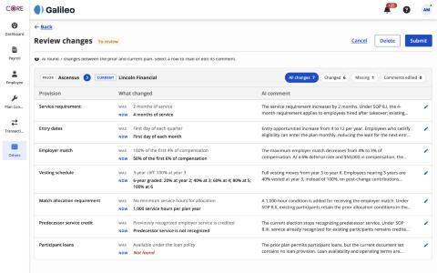
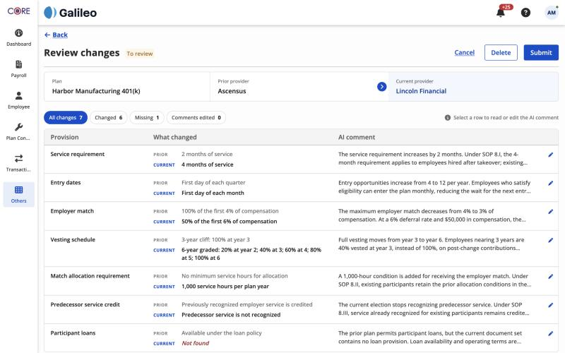

Same plan, same viewport (1440px). Left is before, right is after.


| # | Problem found | Fix |
|---|---|---|
| 1 | The Prior → Current band was glued to the top of the table, so it looked like part of the grid and felt odd. | Moved into its own Plans compared strip above the table, with a gap between them. |
| 2 | Prior and Current looked the same: two small tags with names beside them. | Each provider has its own labelled cell. Current is tinted blue, and the arrow reads left to right. |
| 3 | The band said PRIOR / CURRENT but the rows said WAS / NOW: two words for one idea. | Rows now say PRIOR / CURRENT as well, so one vocabulary is used on the page, the table and the slide-out. |
| 4 | The plan name wasn't on the page at all, so you couldn't tell which plan you were reviewing. | Added Plan as the first cell of the strip. |
| 5 | The filters were tucked at the far right of the band, away from the table they control. | Filters sit in a toolbar directly above the table, left-aligned, where your eye starts. |
| 6 | Bug: the sticky header covered the top half of the info line ("AI found 7 changes…" was clipped). | Removed the header's overlap. The redundant info line is gone (the count is already in "All changes 7"), and the instruction is now a small hint on the right of the toolbar. |